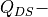
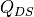

flopy.mf6.modflow.mfgwfsfr Module¶
-
class
flopy.mf6.modflow.mfgwfsfr.ModflowGwfsfr(model, loading_package=False, auxiliary=None, boundnames=None, print_input=None, print_stage=None, print_flows=None, save_flows=None, stage_filerecord=None, budget_filerecord=None, timeseries=None, observations=None, mover=None, maximum_iterations=None, maximum_depth_change=None, unit_conversion=None, nreaches=None, packagedata=None, connectiondata=None, diversions=None, perioddata=None, filename=None, pname=None, parent_file=None)¶ ModflowGwfsfr defines a sfr package within a gwf6 model.
Parameters: - model : MFModel
Model that this package is a part of. Package is automatically added to model when it is initialized.
- loading_package : bool
Do not set this parameter. It is intended for debugging and internal processing purposes only.
- auxiliary : [string]
- auxiliary (string) defines an array of one or more auxiliary variable names. There is no limit on the number of auxiliary variables that can be provided on this line; however, lists of information provided in subsequent blocks must have a column of data for each auxiliary variable name defined here. The number of auxiliary variables detected on this line determines the value for naux. Comments cannot be provided anywhere on this line as they will be interpreted as auxiliary variable names. Auxiliary variables may not be used by the package, but they will be available for use by other parts of the program. The program will terminate with an error if auxiliary variables are specified on more than one line in the options block.
- boundnames : boolean
- boundnames (boolean) keyword to indicate that boundary names may be provided with the list of stream reach cells.
- print_input : boolean
- print_input (boolean) keyword to indicate that the list of stream reach information will be written to the listing file immediately after it is read.
- print_stage : boolean
- print_stage (boolean) keyword to indicate that the list of stream reach stages will be printed to the listing file for every stress period in which “HEAD PRINT” is specified in Output Control. If there is no Output Control option and PRINT_STAGE is specified, then stages are printed for the last time step of each stress period.
- print_flows : boolean
- print_flows (boolean) keyword to indicate that the list of stream reach flow rates will be printed to the listing file for every stress period time step in which “BUDGET PRINT” is specified in Output Control. If there is no Output Control option and “PRINT_FLOWS” is specified, then flow rates are printed for the last time step of each stress period.
- save_flows : boolean
- save_flows (boolean) keyword to indicate that stream reach flow terms will be written to the file specified with “BUDGET FILEOUT” in Output Control.
- stage_filerecord : [stagefile]
- stagefile (string) name of the binary output file to write stage information.
- budget_filerecord : [budgetfile]
- budgetfile (string) name of the binary output file to write budget information.
- timeseries : {varname:data} or timeseries data
- Contains data for the ts package. Data can be stored in a dictionary containing data for the ts package with variable names as keys and package data as values. Data just for the timeseries variable is also acceptable. See ts package documentation for more information.
- observations : {varname:data} or continuous data
- Contains data for the obs package. Data can be stored in a dictionary containing data for the obs package with variable names as keys and package data as values. Data just for the observations variable is also acceptable. See obs package documentation for more information.
- mover : boolean
- mover (boolean) keyword to indicate that this instance of the SFR Package can be used with the Water Mover (MVR) Package. When the MOVER option is specified, additional memory is allocated within the package to store the available, provided, and received water.
- maximum_iterations : integer
- maximum_iterations (integer) value that defines the maximum number of Streamflow Routing Newton-Raphson iterations allowed for a reach. By default, MAXSFRIT is equal to 100.
- maximum_depth_change : double
- maximum_depth_change (double) value that defines the depth closure tolerance. By default, DMAXCHG is equal to .
- unit_conversion : double
- unit_conversion (double) value (or conversion factor) that is used in calculating stream depth for stream reach. A constant of 1.486 is used for flow units of cubic feet per second, and a constant of 1.0 is used for units of cubic meters per second. The constant must be multiplied by 86,400 when using time units of days in the simulation.
- nreaches : integer
- nreaches (integer) integer value specifying the number of stream reaches. There must be NREACHES entries in the PACKAGEDATA block.
- packagedata : [rno, cellid, rlen, rwid, rgrd, rtp, rbth, rhk, man, ncon,
- ustrf, ndv, aux, boundname]
- rno (integer) integer value that defines the reach number associated with the specified PACKAGEDATA data on the line. RNO must be greater than zero and less than or equal to NREACHES. Reach information must be specified for every reach or the program will terminate with an error. The program will also terminate with an error if information for a reach is specified more than once.
- cellid ((integer, …)) The keyword `NONE’ must be specified for reaches that are not connected to an underlying GWF cell. The keyword `NONE’ is used for reaches that are in cells that have IDOMAIN values less than one or are in areas not covered by the GWF model grid. Reach-aquifer flow is not calculated if the keyword `NONE’ is specified.
- rlen (double) real value that defines the reach length. RLEN must be greater than zero.
- rwid (double) real value that defines the reach width. RWID must be greater than zero.
- rgrd (double) real value that defines the stream gradient (slope) across the reach. RGRD must be greater than zero.
- rtp (double) real value that defines the top elevation of the reach streambed.
- rbth (double) real value that defines the thickness of the reach streambed. RBTH can be any value if CELLID is `NONE’. Otherwise, RBTH must be greater than zero.
- rhk (double) real value that defines the hydraulic conductivity of the reach streambed. RHK can be any positive value if CELLID is `NONE’. Otherwise, RHK must be greater than zero.
- man (string) real or character value that defines the Manning’s roughness coefficient for the reach. MAN must be greater than zero. If the Options block includes a TIMESERIESFILE entry (see the “Time- Variable Input” section), values can be obtained from a time series by entering the time-series name in place of a numeric value.
- ncon (integer) integer value that defines the number of reaches connected to the reach.
- ustrf (double) real value that defines the fraction of upstream flow from each upstream reach that is applied as upstream inflow to the reach. The sum of all USTRF values for all reaches connected to the same upstream reach must be equal to one and USTRF must be greater than or equal to zero.
- ndv (integer) integer value that defines the number of downstream diversions for the reach.
- aux (double) represents the values of the auxiliary variables for each stream reach. The values of auxiliary variables must be present for each stream reach. The values must be specified in the order of the auxiliary variables specified in the OPTIONS block. If the package supports time series and the Options block includes a TIMESERIESFILE entry (see the “Time-Variable Input” section), values can be obtained from a time series by entering the time-series name in place of a numeric value.
- boundname (string) name of the stream reach cell. BOUNDNAME is an ASCII character variable that can contain as many as 40 characters. If BOUNDNAME contains spaces in it, then the entire name must be enclosed within single quotes.
- connectiondata : [rno, ic]
- rno (integer) integer value that defines the reach number associated with the specified CONNECTIONDATA data on the line. RNO must be greater than zero and less than or equal to NREACHES. Reach connection information must be specified for every reach or the program will terminate with an error. The program will also terminate with an error if connection information for a reach is specified more than once.
- ic (double_precision) integer value that defines the reach number of the reach connected to the current reach and whether it is connected to the upstream or downstream end of the reach. Negative IC numbers indicate connected reaches are connected to the downstream end of the current reach. Positive IC numbers indicate connected reaches are connected to the upstream end of the current reach. The absolute value of IC must be greater than zero and less than or equal to NREACHES.
- diversions : [rno, idv, iconr, cprior]
- rno (integer) integer value that defines the reach number associated with the specified DIVERSIONS data on the line. RNO must be greater than zero and less than or equal to NREACHES. Reach diversion information must be specified for every reach with a NDV value greater than 0 or the program will terminate with an error. The program will also terminate with an error if diversion information for a given reach diversion is specified more than once.
- idv (integer) integer value that defines the downstream diversion number for the diversion for reach RNO. IDV must be greater than zero and less than or equal to NDV for reach RNO.
- iconr (integer) integer value that defines the downstream reach that will receive the diverted water. IDV must be greater than zero and less than or equal to NREACHES. Furthermore, reach ICONR must be a downstream connection for reach RNO.
- cprior (string) character string value that defines the the prioritization system for the diversion, such as when insufficient water is available to meet all diversion stipulations, and is used in conjunction with the value of FLOW value specified in the STRESS_PERIOD_DATA section. Available diversion options include: (1) CPRIOR = FRACTION’, then the amount of the diversion is computed as a fraction of the streamflow leaving reach RNO (:math:`Q_{DS}); in this case, 0.0 DIVFLOW 1.0. (2) CPRIOR = EXCESS’, a diversion is made only if :math:`Q_{DS} for reach RNO exceeds the value of DIVFLOW. If this occurs, then the quantity of water diverted is the excess flow ( DIVFLOW) and  from reach RNO is set equal to DIVFLOW. This represents a flood-control type of diversion, as described by Danskin and Hanson (2002). (3) CPRIOR = THRESHOLD’, then if :math:`Q_{DS} in reach RNO is less than the specified diversion flow (DIVFLOW), no water is diverted from reach RNO. If in reach RNO is greater than or equal to (DIVFLOW), (DIVFLOW) is diverted and is set to the remainder ( DIVFLOW)). This approach assumes that once flow in the stream is sufficiently low, diversions from the stream cease, and is the priority’ algorithm that originally was programmed into the STR1 Package (Prudic, 1989). (4) CPRIOR = `UPTO’ – if :math:`Q_{DS} in reach RNO is greater than or equal to the specified diversion flow (DIVFLOW), is reduced by DIVFLOW. If in reach RNO is less than (DIVFLOW), DIVFLOW is set to and there will be no flow available for reaches connected to downstream end of reach RNO.
- perioddata : [rno, sfrsetting]
rno (integer) integer value that defines the reach number associated with the specified PERIOD data on the line. RNO must be greater than zero and less than or equal to NREACHES.
sfrsetting (keystring) line of information that is parsed into a keyword and values. Keyword values that can be used to start the SFRSETTING string include: STATUS, MANNING, STAGE, INFLOW, RAINFALL, EVAPORATION, RUNOFF, DIVERSION, UPSTREAM_FRACTION, and AUXILIARY.
- status : [string]
- status (string) keyword option to define stream reach status. STATUS can be ACTIVE, INACTIVE, or SIMPLE. The SIMPLE STATUS option simulates streamflow using a user-specified stage for a reach or a stage set to the top of the reach (depth = 0). In cases where the simulated leakage calculated using the specified stage exceeds the sum of inflows to the reach, the stage is set to the top of the reach and leakage is set equal to the sum of inflows. Upstream fractions should be changed using the UPSTREAM_FRACTION SFRSETTING if the status for one or more reaches is changed to ACTIVE or INACTIVE. For example, if one of two downstream connections for a reach is inactivated, the upstream fraction for the active and inactive downstream reach should be changed to 1.0 and 0.0, respectively, to ensure that the active reach receives all of the downstream outflow from the upstream reach. By default, STATUS is ACTIVE.
- manning : [string]
- manning (string) real or character value that defines the Manning’s roughness coefficient for the reach. MANNING must be greater than zero. If the Options block includes a TIMESERIESFILE entry (see the “Time-Variable Input” section), values can be obtained from a time series by entering the time-series name in place of a numeric value.
- stage : [string]
- stage (string) real or character value that defines the stage for the reach. The specified STAGE is only applied if the reach uses the simple routing option. If STAGE is not specified for reaches that use the simple routing option, the specified stage is set to the top of the reach. If the Options block includes a TIMESERIESFILE entry (see the “Time- Variable Input” section), values can be obtained from a time series by entering the time-series name in place of a numeric value.
- inflow : [string]
- inflow (string) real or character value that defines the volumetric inflow rate for the streamflow routing reach. If the Options block includes a TIMESERIESFILE entry (see the “Time-Variable Input” section), values can be obtained from a time series by entering the time-series name in place of a numeric value. By default, inflow rates are zero for each reach.
- rainfall : [string]
- rainfall (string) real or character value that defines the volumetric rate per unit area of water added by precipitation directly on the streamflow routing reach. If the Options block includes a TIMESERIESFILE entry (see the “Time-Variable Input” section), values can be obtained from a time series by entering the time-series name in place of a numeric value. By default, rainfall rates are zero for each reach.
- evaporation : [string]
- evaporation (string) real or character value that defines the volumetric rate per unit area of water subtracted by evaporation from the streamflow routing reach. A positive evaporation rate should be provided. If the Options block includes a TIMESERIESFILE entry (see the “Time-Variable Input” section), values can be obtained from a time series by entering the time-series name in place of a numeric value. If the volumetric evaporation rate for a reach exceeds the sources of water to the reach (upstream and specified inflows, rainfall, and runoff but excluding groundwater leakage into the reach) the volumetric evaporation rate is limited to the sources of water to the reach. By default, evaporation rates are zero for each reach.
- runoff : [string]
- runoff (string) real or character value that defines the volumetric rate of diffuse overland runoff that enters the streamflow routing reach. If the Options block includes a TIMESERIESFILE entry (see the “Time-Variable Input” section), values can be obtained from a time series by entering the time-series name in place of a numeric value. If the volumetric runoff rate for a reach is negative and exceeds inflows to the reach (upstream and specified inflows, and rainfall but excluding groundwater leakage into the reach) the volumetric runoff rate is limited to inflows to the reach and the volumetric evaporation rate for the reach is set to zero. By default, runoff rates are zero for each reach.
- diversionrecord : [idv, divrate]
- idv (integer) diversion number.
- divrate (double) real or character value that defines the volumetric diversion (DIVFLOW) rate for the streamflow routing reach. If the Options block includes a TIMESERIESFILE entry (see the “Time-Variable Input” section), values can be obtained from a time series by entering the time-series name in place of a numeric value.
- upstream_fraction : [double]
- upstream_fraction (double) real value that defines the fraction of upstream flow (USTRF) from each upstream reach that is applied as upstream inflow to the reach. The sum of all USTRF values for all reaches connected to the same upstream reach must be equal to one.
- auxiliaryrecord : [auxname, auxval]
- auxname (string) name for the auxiliary variable to be assigned AUXVAL. AUXNAME must match one of the auxiliary variable names defined in the OPTIONS block. If AUXNAME does not match one of the auxiliary variable names defined in the OPTIONS block the data are ignored.
- auxval (double) value for the auxiliary variable. If the Options block includes a TIMESERIESFILE entry (see the “Time- Variable Input” section), values can be obtained from a time series by entering the time-series name in place of a numeric value.
- filename : String
File name for this package.
- pname : String
Package name for this package.
- parent_file : MFPackage
Parent package file that references this package. Only needed for utility packages (mfutl*). For example, mfutllaktab package must have a mfgwflak package parent_file.
-
get_package(name=None)¶ Get a package.
Parameters: - name : str
Name of the package, ‘RIV’, ‘LPF’, etc.
Returns: - pp : Package object
-
plot(**kwargs)¶ Plot 2-D, 3-D, transient 2-D, and stress period list (MfList) package input data
Parameters: - package: flopy.pakbase.Package instance supplied for plotting
- **kwargs : dict
- filename_base : str
Base file name that will be used to automatically generate file names for output image files. Plots will be exported as image files if file_name_base is not None. (default is None)
- file_extension : str
Valid matplotlib.pyplot file extension for savefig(). Only used if filename_base is not None. (default is ‘png’)
- mflay : int
MODFLOW zero-based layer number to return. If None, then all all layers will be included. (default is None)
- kper : int
MODFLOW zero-based stress period number to return. (default is zero)
- key : str
MfList dictionary key. (default is None)
Returns: - axes : list
Empty list is returned if filename_base is not None. Otherwise a list of matplotlib.pyplot.axis are returned.